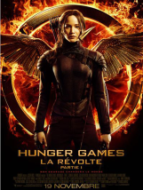
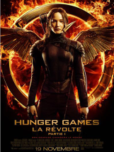
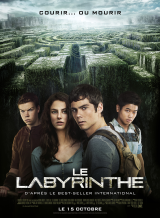
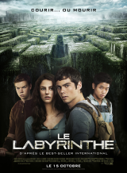

Le séjour au Capitole
Le premier volet de Hunger Games est adapté en film par Gary Ross en 2012. Cette adaptation correspond au livre original et comprend comme acteur principal Jennifer Lawrence.

Le premier volet de Hunger Games est adapté en film par Gary Ross en 2012. Cette adaptation correspond au livre original et comprend comme acteur principal Jennifer Lawrence.
Ce film reste fidèle au livre. Il met en image tout ce qui est décrit par Katniss dans le premier tome. Le Capitole est bien montré comme une ville riche et très moderne. Quand Katniss et Peeta y arrivent, ils la découvrent pour la première fois. Ce lieu est le parfait opposé du District 12.

Le Capitole est directement montré comme une ville regorgeante d’avancées technologiques. Les deux tributs s’y rendent d’ailleurs dans un train très futuriste. Pendant leur séjour avant les jeux, les tribus vivent de façon très luxueuse, à l’image de la ville.
Le jour de la Moisson, Katniss se porte volontaire pour protéger sa soeur. L’hôtesse présente, Effie Trinket appelle donc aux applaudissements. Le peuple du District 12 n’applaudit pas. À la place, ils effectuent un signe de leur main levant trois doigts et leur mains en l’air. Ce signe, typique au District 12 est signe de respect, mais aussi de paix et de rébellion.
Cinna est le styliste de Katniss et Peeta. Son rôle est d’habiller les deux tristement élus du District 12 pour leur passage devant les caméras. Pour le défilé de chaque district, ils sont habillés avec des tenues enflammées. Cela aura pour but d’attirer le regard du public et des sponsors. Katniss sera par la suite nommée “la fille du feu”. Ils deviennent les favoris du public.

“Je n’ai pas le droit de parier, mais sinon je parierais sur toi.” - Cinna à Katniss
Le passage à la télévision de chaque tribut est important. Chacun, habillé par son styliste se fait interrogé par l’animateur, Caesar. Katniss possède une robe en feu pour impressionner l’auditoire. Après les Hunger Games, les deux vainqueurs retournent au même endroit, cette fois ensemble et heureux.
Dans l’arène, Katniss se fait une amie et coéquipière se nommant Rue. À sa mort elle effectue le signe en direction des caméras. Les habitants du District 11 répondent à ce signe de respect avant de se rebeller. Ils finissent donc par se rebeller contre les pacificateurs présents dans le District. Cette population sèment le chaos sur le lieu de diffusion. Les pacificateurs ripostent.
Le Président Snow remet les couronnes aux deux gagnants après leur victoire. Les dernières images du film sont le Président Snow nous tournant le dos. Il part d’un air déçu et de soif de revanche.

 

 
